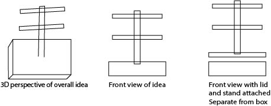

Concept

Example inspiration for my idea
Original sketches of idea. Didn't take measurements and build volume constraints into consideration 
Updated sketch idea with constraints in mind
The intended use case for this idea is as a display/home decor item. This is something I can put on my desk or nightstand or some kind of flat surface, so that I can see these pictures and easily access the other polaroids not on display. The polaroids would have its own place, and I'll have a section of my drawer back. Context
This is something I would keep in my room, but if I were to create multiples, they could be displayed anywhere in the home. It's basically a home decor item type thing. This idea can be recreated by anyone who wants a unique photo stand and keepsakes box to show their favorite memories or to be reminded of those memories.
Breakdown of Tasks
To start the whole design process of this idea, I plan to use OnShape for CAD modeling. I will design the box, polaroid photo stand, and clothespins on here. I chose OnShape because of it's ease of use and assembly feature. I will be able to visualise what the pieces look like together as well as making sure the mechanical design of the clothespins works. If I run into any issues with making things on OnShape, I'll use Rhino. 2. Laser cutting
One of the machines I'm going to use is the laser cutter. I want to make a majority of the box out plywood and will use the laser cutter to do vector cuts. The base box design will contain finger joints, so the box can easily assemble together without outside reinforcements. 3. 3D printing
Another machine I'll use is the 3D printer. I plan to 3D print the lid of the box, the polaroid stand, and clothespins. There are 2 reasons as to why I want to 3D print the box lid. One is by making a lid that has a lip that fits with the plywood box to make it easy to take off and put back on when I want access to the stored polaroids. Second is that I can create a semi-closed slot on the top of the lid where the photo stand will sit in and be able to prop up without additional reinforcements. 3D printing will allow me to easily get details of the lip of the lid that is not doable with the laser cutter. I also plan to 3D print the main center pole and the corresponding racks. The polaroids will hang from the racks. I plan to print each part separately because of build volume constraints as well as in case of errors. Just in case something goes wrong in the 3D printing, I wouldn't have to reprint the entire thing. The center pole will have slots that the racks will go through. 4. Mechanism design
The 4th thing I'm incorporating into this final project is mechanism design. I want to make a lid that can pop off the box, so I can easily access the stored polaroids or add polaroids into the storage box. This can be considered mechanism design as it combines multiple parts, and the purpose of the lid is to easily remove it. The 3D printed clothespins also fall into mechanism design. The clothespins will have 2 parts and either I will buy springs to attach the two parts or 3D print the springs themselves. These clothespins will hold the polaroid. I plan to make a hole in the clothespins so that I can loop a string through them and hang them from the rack.

Inspiration example for the clothespins idea
Timeline & Contingency Plans
Monday, May 27 Polaroid measurement for final design measurement
Tuesday, May 28-Thursday, May 30 CAD modeling of box, stand, and clothespins
Thursday, May 30 Start 3D printing process
Friday, May 31 Continue 3D printing process; redo any 3D prints with errors
Saturday, June 1 Laser cut box and assemble
Sunday, June 2 Work on any pieces that need to be fixed; redo any 3D printing errors
Monday, June 3 Work on GitHub documentation; redo any 3D printing errors
Tuesday, June 4 Continue documentation work; fix any remaining errors
Wednesday, June 5 Showcase final project
Friday, June 7 Submit final documentation if haven't already
Bill of Materials & Sourcing Schedule
PLA filament - will print at Fluke where PLA is 5 cents a gram
String/twine - purchase from a crafts store this week (5/27-6/2)
Polaroids - my own supply